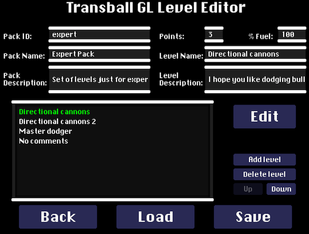
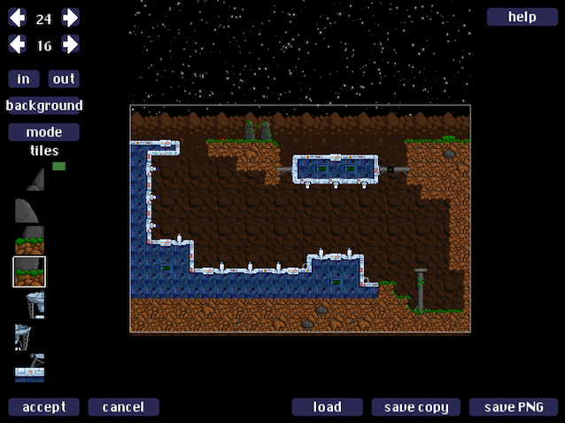

"Transbal GL" is the sequel of Super Transball 2,
Inspired in thrustb> type of games (and concretely in Zara Thrusta for the Amiga 500). In each level of Transball, the goal is to find the sphere, capture it and carry it to the upper part of the level. The main obstacle is gravity, that pulls you towards the ground. But many other obstacles such as canons, tanks, lasers, etc. will try to make your journey difficult...
As previous Transball games, Transball GL is not an easy game, you will need lots of practice to unlock all the ships and complete all the levels!
Transball GL is open-source, you can find all the code/data of the game in its github page.
How to Play
In Transball, you control a small ship through a series of levels. In each level, you need to find the sphere, and take it all the way to the top of the level. The main problem is that if you ship touches anything, it will be destroyed. So, you need to avoid colliding with walls, bullets, lasers, etc. Gravity always pulls you downwards, and you need to use your thrusters to prevent your ship from crashing into the ground, as well as for navigating through the level.
The controls of the game are shown in the following screenshot (they are all configurable through the Options screen accessible both from the main menu, and during game).
Controls:
Thrust: propels your ship forward. Look out, since thrusting uses fuel, and you only have a limited amount (fuel is displayed at the top-left of the screen).
Left/Right: with this, you can turn your ship left and right.
Fire: to fire bullets and kill enemies. Notice that firing bullets also uses fuel!
Attractor: once you get close enough to the sphere, you need to capture it with the attractor. The attractor will only work, however, if your ship is moving slowly.
Special: some ships have special abilities (force fields, additional back or side thrusters, etc.), which are activated using this key.
Menu: to access the options menu at any time during the game (also letting you pause the game, or quit the current level).
To play the game:
Click Play from the title screen.
You will then see the level selection screen, where you can select which level you want to play (left), which ship you want to play with (right), or whether you want to load a different level pack. You will see a little tutorial explaining you the special abilities of the ship you currently have selected on the right part of the screen. Press "F" to make that tutorial full-screen.
In the left-part of the screen you will see the list of levels in the current level pack (three at a time). Use the up and down arrows to navigate through the levels (but you need to beat a level before you can play the next!). Those levels that have been unlocked have the "play" button highlighted. PRess this button to start playing. Also, for those levels you have already beaten, you will see the "view replay" button highlighted, to see the replay of your best game (the one with the lowest time) for that level.
The Ships
You can choose between twelve types of ships for accomplishing your goal. Each one of the ships has its own characteristics. However, only three of them are available at the beginning, you will have to unlock the remaining of them by accumulating points. You get points for completing levels (harder levels give more points). Also, completing the same level with different ships gives you extra points.
These are the first three ships that you have access to:
V-Panther 2: this is the ship that you controlled in the original Transball and Transball 2 games. It's a well balanced ship with medium speed, medium powered weapons (2 shots to kill a standard canon), and no special abilities nor handicaps.
X-Terminator: this is a very powerful ship. It's missiles can kill a standard canon with only one shot. However, this is also a very heavy ship, and thus it's much slower than other ships.
The Shadow Runner: this is a very fast ship. It is also equipped with "retro thrusters" (which can be activated with the Special key). These can be used to thrust backwards. They are not very powerful, but can save your life in many occasions! It's main drawback is that the bullets is shoots have a very low destructive power (it requires 4 shots to destroy a standard canon).
There are nine other ships however. Some of them fire lasers rather than bullets, some have forcefields, homing missiles, and even a grappling hook to hold on to the ball! Unlock them all to play with your favorite ship!
Level Packs, Player Profiles, Highscores, etc.
When you play Transball GL for the first time, it will ask you to create a player profile. This will store which levels you have already completed, how many ships have you unlocked, etc. So, different people can play in the same computer with different profiles. In the future, I'd like this to be synced on-line, so people can compete on-line, but that's not implemented yet.
Scoring in Transball GL has two parts:
Points: each time you complete a level with a new ship, you get points. The more points you get the more ships you unlock.
Time: Transball GL keeps track of the time you took to beat each level, and stores the lowest time (including a replay of such game). When you tie with another player in points, time is used to resolve the tie. Try to beat each level as fast as possible!
Transball GL lets you load different level packs. A level pack is a set of levels of increasing difficulty. By default, the game comes with two level packs: Transball GL (the default level pack), and the Expert Pack (a collection of short levels of insane difficulty).
Each time you finish a game (whether you beat the level or not), you will have the opportunity to save the replay. Select the "replays" option from the main menu to see all the replays you saved. Replays of the best games you play in each level are saved automatically, and can be accessed directly from the level selection screen
Editor
Transball GL comes built-in with an editor with which you can create your own level packs. To access the editor, select the "editor" option in the main menu. There are two main parts to the editor: the level pack editor, and the map editor.
Level Pack Editor
When you first select the editor, you will see the level pack editor, which looks like this:

In this screen, you can:
Load and Save: you will start with an empty level pack. But you can load an existing one, or save the current one you are editing with the buttons in the bottom of the screen.
Level Pack Properties: a level pack has three main properties. An "id" (which is the name of the folder under which it will be stored; all level packs must have a unique ID), a "name", and a "description" (a longer text that describes the level pack).
Set of levels: in the middle-left of the screen you see the current list of levels in the level pack. One of them might be highlighted in green, meaning it is the currently selected one. When you have a level selected, you will see it's properties on the top-right, and the "edit" button on the right will be highlighted, meaning you can go to the map editor to edit this level. You can add and delete levels with the buttons on the right part of the screen.
Change level properties: levels have 5 properties. The first is the order in which they appear. You can move a level up or down with the "up"/"down" buttons on the right. Each level also has a "name" and a "description" that will be displayed before a player plays the level. Finally, you must also specify how many points do players get for completing the level, and the percentage of fuel with which they start the level.
Edit a level: when you want to edit a map, just click on the large "edit" button on the right, which will take you to the map editor.
Map Editor
When you enter into the map editor, you will see something like this:

In this screen, you can:
Change the map dimensions: on the top-left you will see the current size of the map in width and height. You can make a map larger or smaller by clicking on the small arrows
Background: maps can have different background themes (rock, snow, techno, etc.). You can cycle through the themes by clicking on the "background" button on the left.
Navigate through the map: to move around in the editor, you can use the arrow keys in your keyboard, or move the mouse to the edges of the screen. You can also zoom in and out by pressing "page up" or "page down" in your keyboard, or pressing the "in"/"out" buttons on the top-left.
Accept/cancel: these two buttons on the bottom-left of the screen let you accept all the changes you did in the map and go back to the level pack editor, or cancel the changes and go back to the level pack editor.
Load/Save a copy of a map: you can save a map independently of a level pack by clicking on the "save copy" button. You can later load that map again by clicking on the "load" button. Also, you can save an image of the current level by pressing "save PNG", useful for showing off your level.
Editing the map!: described in more detail below.
Maps are composed of three layers:
Background: a theme displayed on the back of the level for decoration purposes only (can be changed with the "background" button on the left).
Foreground: composed of a grid of "tiles", making the bulk of the level. The foreground contains all static objects such as walls of the level.
Objects: all the parts of the level that are active (e.g., tiles with animations, enemies, doors, switches, etc.).
To edit each of the different layers of a map, the editor has four "modes" of operation, which you can change by clicking on the "mode" button on the left:
Tiles: allows you to edit the foreground layer. You will have a palette of all the available tiles (left part of the screen). Select one with the mouse, and you can then click anywhere in the map to start placing tiles. You can navigate the tile palette with the Q/A keys, or by scrolling up and down with your mouse. To delete a tile, just hover over it with the mouse, and press the "backspace" key in your keyboard.Objects: allows you to add objects (such as enemies). Similarly to th tiles mode, you will see a list of all the objects. Select them and start placing them in the map. You can delete objects by hovering over them (you will see a red square around them) and then pressing "backspace".Properties: some objects have properties, such as which doors are open by each button, etc. This mode lets you change these properties. To change a property press (in your keyboard) the number listed to the left of the property in screen (to decrease its value, hold "shift" while pressing the number). The properties that you can change are:
A0: the animation offset (if you want the animation of some objects to start at a different animation frame).
ID: the "ID" of the object (for doors and switches). A door with "ID = 0" will activate the instant you grab the ball. A door with an "ID" higher than 0, will activate when you press a button with ID equal to "door ID - 1".
IS: initial state of the door (whether it starts open or closed).
Smart: fitting tiles right next to each other to compose a map can be a tedious task. The smart mode tries to make it easier by automatically matching tiles that fit those that are already there in the map. Use this at the beginning of starting to create a level to get the rough structure of your level done, and then refine it with the tile mode. There are three settings for the "smart" mode: rock, snow and techno. Select one of them and start drawing. Moreover, notice that sometimes the smart mode might get things wrong (this is because it selects tiles automatically based on color matching the edges of tiles, and it might sometimes not do what you expect).
Folder Structures
To prevent users from accidentally editing the main level packs of Transball GL and messing up the game, the maps you edit and the maps you play are stored in separate folders. Once you have created a level pack you like, and you want to play, you can just move it to the appropriate folder by hand.
The folder structure Transball GL creates is as follows:
Unix Systems (OS X/Linux): the first time you launch the game, Transball GL will create a folder called ".transballGL" in your home, that contains all of your data.
Windows: in windows, no such folder is created, and all the data lives directly in the folder where you copied the game on to your computer.
You should be aware of the following subfolders:
maps: lives in the folder where you installed the game regardless of whether it's Unix or Windows. This is the folder from where you load level packs to play the game. If you have created a level pack you think it's ready to play, just copy it here (a level pack consists of a main file, and a folder with the same name). In OS X, this folder will be inside of the application bundle, just right click the app, and select "show contents".
mymaps: this is the folder that the map editor uses to save the maps/level packs you create. This lives in ".transballGL" in Unix, or in the game folder in Windows.
replays: contains all the replays you saved. This lives in ".transballGL" in Unix, or in the game folder in Windows.
players and other-players: the players folder contains your player profiles and stores all the replays corresponding to your highscores. The "other-players" folder is used to store info from other players (in the future when there is on-line sychronization, this will contain the highscores of the top players on-line), it's empty for now, but you can manually copy player data from your friends there if you want, and this will show up in the highscores. These live in ".transballGL" in Unix, or in the game folder in Windows.